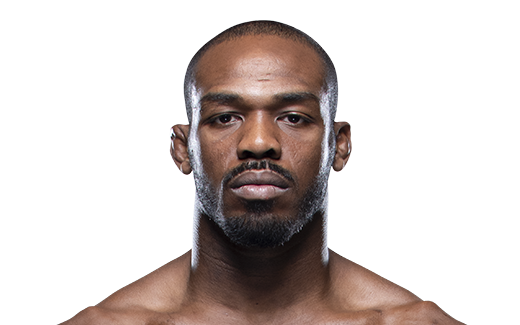

Israel Adesanya is a Nigerian-born New Zealand professional mixed martial artist who currently competes in the Ultimate Fighting Championship (UFC).
He is a former kickboxing and boxing champion and has an undefeated professional MMA record of 21 wins and 1 loss.
Adesanya is known for his striking skills, technical precision, and flamboyant personality both in and out of the octagon.
You're like Islam Makhachev!
Islam Makhachev is a Russian professional mixed martial artist who competes in the Ultimate Fighting Championship (UFC).
He is a former Combat Sambo world champion and has an impressive MMA record of 20 wins and 1 loss.
Makhachev is known for his grappling skills, particularly his dominant wrestling and impressive submission game, and is considered one of the top lightweight prospects in the UFC.
You're like Jiri Prochazka!
Jiri Prochazka is a Czech professional mixed martial artist who currently competes in the Ultimate Fighting Championship (UFC).
He is a former Rizin Fighting Federation light heavyweight champion and has an impressive MMA record of 28 wins and 4 losses.
Prochazka is known for his unorthodox and creative striking style, as well as his durability and toughness in the octagon.
You're like Jon Jones!
Jon Jones is an American professional mixed martial artist and former UFC light heavyweight champion.
He is widely considered one of the greatest fighters in MMA history, with a professional record of 26 wins, 1 loss, and 1 no contest.
Jones is known for his impressive striking and grappling abilities, as well as his unorthodox fighting style and ability to adapt to his opponents in the octagon.

You're like Khabib Nurmagomedov!
Khabib Nurmagomedov is a retired Russian professional mixed martial artist who competed in the Ultimate Fighting Championship (UFC).
He is a former UFC lightweight champion and had an undefeated professional MMA record of 29 wins and 0 losses.
Khabib is widely regarded as one of the greatest fighters in MMA history, known for his dominating wrestling and grappling skills, as well as his impressive striking and conditioning.
You're like Connor McGregor!
Conor McGregor is an Irish professional mixed martial artist and boxer.
He is a former UFC featherweight and lightweight champion and has a professional MMA record of 22 wins and 5 losses.
McGregor is known for his striking abilities, brash personality, and ability to promote fights, which has made him one of the biggest stars in combat sports history.
You're like Demetrius Johnson!
Demetrious Johnson, also known as "Mighty Mouse," is an American retired professional mixed martial artist who competed in the UFC.
He is a former UFC flyweight champion and holds the record for most consecutive title defenses in the division.
Johnson is known for his incredible speed, technical striking and grappling abilities, and strategic fighting style, which made him one of the best pound-for-pound fighters in MMA history.
You're like Paddy Pimblett!
Paddy Pimblett is a British professional mixed martial artist who competes in the Ultimate Fighting Championship (UFC).
He is a former Cage Warriors featherweight champion and has an impressive MMA record of 16 wins and 3 losses.
Pimblett is known for his charismatic personality, flashy striking style, and ability to finish fights both on the feet and on the ground.
You're like Alex Pereira!
Alex Pereira is a Brazilian professional kickboxer and mixed martial artist who currently competes in the Ultimate Fighting Championship (UFC).
He is the current UFC middleweight champion and former two-time Glory middleweight champion and has an impressive kickboxing record of 46 wins, 7 losses, and 1 draw.
Pereira is known for his knockout power, precise striking, and aggressive fighting style, and is considered one of the best middleweight kickboxers in the world.
You're like Glover Texiera!
Glover Teixeira is a Brazilian professional mixed martial artist who currently competes in the Ultimate Fighting Championship (UFC).
He is a former UFC light heavyweight title challenger and has an impressive professional MMA record of 32 wins and 8 losses.
Teixeira is known for his strong grappling and jiu-jitsu skills, as well as his heavy hands and durability in the octagon.
You're like Tony Furguson!
Tony Ferguson is an American retired professional mixed martial artist who competed in the UFC.
He is a former interim UFC lightweight champion and had an impressive professional MMA record of 25 wins and 5 losses.
Ferguson is known for his unorthodox and unpredictable fighting style, as well as his impressive grappling and submission skills, making him a fan favorite and one of the top lightweights in the UFC for many years.
You're like Alexander Volkanovski!
Alexander Volkanovski is an Australian professional mixed martial artist who currently competes in the Ultimate Fighting Championship (UFC).
He is a former professional rugby player and has an impressive MMA record of 23 wins and only 1 loss.
Volkanovski is known for his impressive wrestling and grappling abilities, as well as his powerful striking and conditioning.
He is the current UFC featherweight champion and considered one of the best fighters in his weight class.
Israel Adesanya is a Nigerian-born New Zealand professional mixed martial artist who currently competes in the Ultimate Fighting Championship (UFC).
He is a former kickboxing and boxing champion and has an undefeated professional MMA record of 21 wins and 1 loss.
Adesanya is known for his striking skills, technical precision, and flamboyant personality both in and out of the octagon.
Conor McGregor is an Irish professional mixed martial artist and boxer.
He is a former UFC featherweight and lightweight champion and has a professional MMA record of 22 wins and 5 losses.
McGregor is known for his striking abilities, brash personality, and ability to promote fights, which has made him one of the biggest stars in combat sports history.
Alexander Volkanovski is an Australian professional mixed martial artist who currently competes in the Ultimate Fighting Championship (UFC).
He is a former professional rugby player and has an impressive MMA record of 23 wins and only 1 loss.
Volkanovski is known for his impressive wrestling and grappling abilities, as well as his powerful striking and conditioning.
He is the current UFC featherweight champion and considered one of the best fighters in his weight class.
Islam Makhachev is a Russian professional mixed martial artist who competes in the Ultimate Fighting Championship (UFC).
He is a former Combat Sambo world champion and has an impressive MMA record of 20 wins and 1 loss.
Makhachev is known for his grappling skills, particularly his dominant wrestling and impressive submission game, and is considered one of the top lightweight prospects in the UFC.
Jon Jones is an American professional mixed martial artist and former UFC light heavyweight champion.
He is widely considered one of the greatest fighters in MMA history, with a professional record of 26 wins, 1 loss, and 1 no contest.
Jones is known for his impressive striking and grappling abilities, as well as his unorthodox fighting style and ability to adapt to his opponents in the octagon.
Jiri Prochazka is a Czech professional mixed martial artist who currently competes in the Ultimate Fighting Championship (UFC).
He is a former Rizin Fighting Federation light heavyweight champion and has an impressive MMA record of 28 wins and 4 losses.
Prochazka is known for his unorthodox and creative striking style, as well as his durability and toughness in the octagon.
Khabib Nurmagomedov is a retired Russian professional mixed martial artist who competed in the Ultimate Fighting Championship (UFC).
He is a former UFC lightweight champion and had an undefeated professional MMA record of 29 wins and 0 losses.
Khabib is widely regarded as one of the greatest fighters in MMA history, known for his dominating wrestling and grappling skills, as well as his impressive striking and conditioning.
Demetrious Johnson, also known as "Mighty Mouse," is an American retired professional mixed martial artist who competed in the UFC.
He is a former UFC flyweight champion and holds the record for most consecutive title defenses in the division.
Johnson is known for his incredible speed, technical striking and grappling abilities, and strategic fighting style, which made him one of the best pound-for-pound fighters in MMA history.
Paddy Pimblett is a British professional mixed martial artist who competes in the Ultimate Fighting Championship (UFC).
He is a former Cage Warriors featherweight champion and has an impressive MMA record of 16 wins and 3 losses.
Pimblett is known for his charismatic personality, flashy striking style, and ability to finish fights both on the feet and on the ground.
Alex Pereira is a Brazilian professional kickboxer and mixed martial artist who currently competes in the Ultimate Fighting Championship (UFC).
He is the current UFC middleweight champion and former two-time Glory middleweight champion and has an impressive kickboxing record of 46 wins, 7 losses, and 1 draw.
Pereira is known for his knockout power, precise striking, and aggressive fighting style, and is considered one of the best middleweight kickboxers in the world.
Glover Teixeira is a Brazilian professional mixed martial artist who currently competes in the Ultimate Fighting Championship (UFC).
He is a former UFC light heavyweight title challenger and has an impressive professional MMA record of 32 wins and 8 losses.
Teixeira is known for his strong grappling and jiu-jitsu skills, as well as his heavy hands and durability in the octagon.
Tony Ferguson is an American retired professional mixed martial artist who competed in the UFC.
He is a former interim UFC lightweight champion and had an impressive professional MMA record of 25 wins and 5 losses.
Ferguson is known for his unorthodox and unpredictable fighting style, as well as his impressive grappling and submission skills, making him a fan favorite and one of the top lightweights in the UFC for many years.